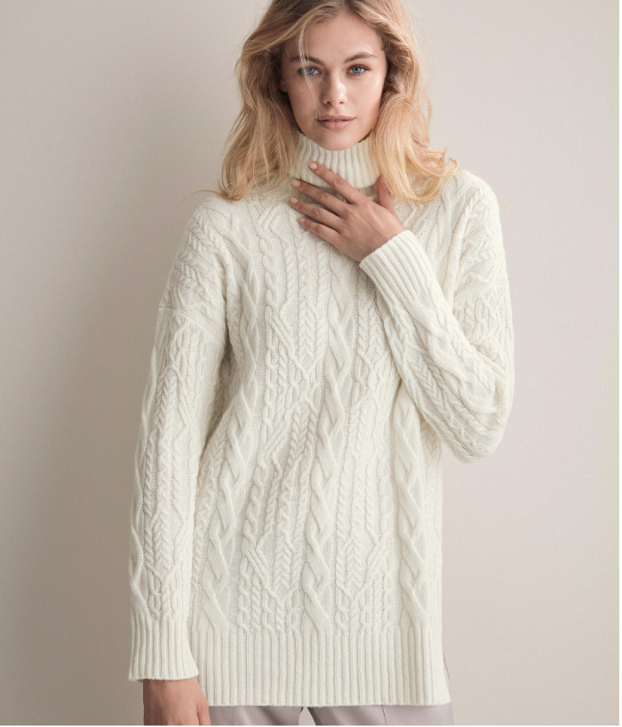
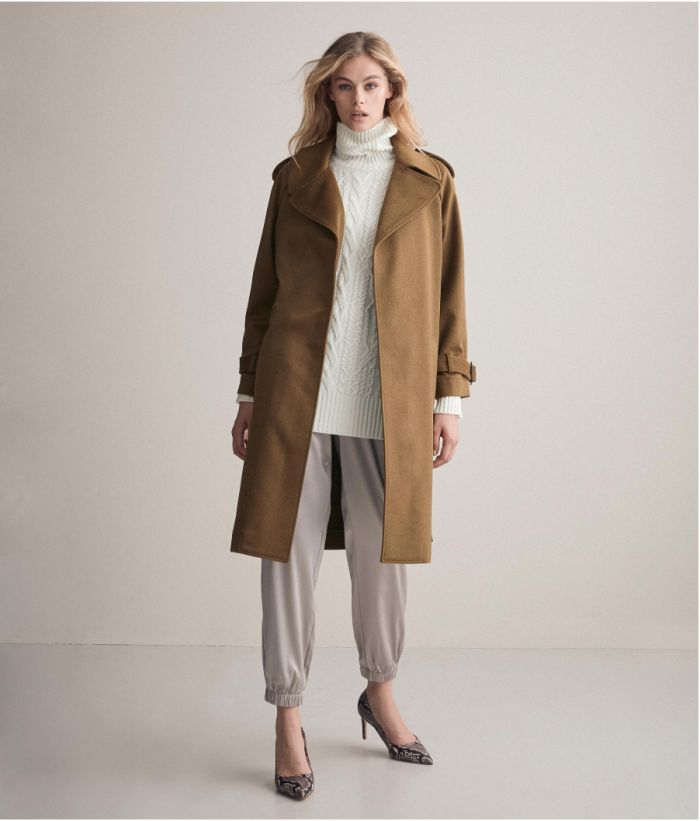
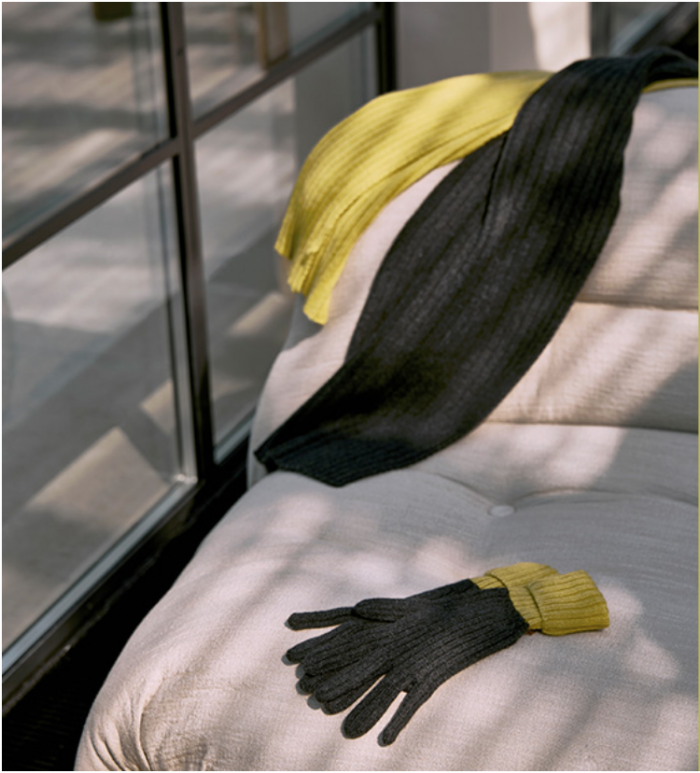
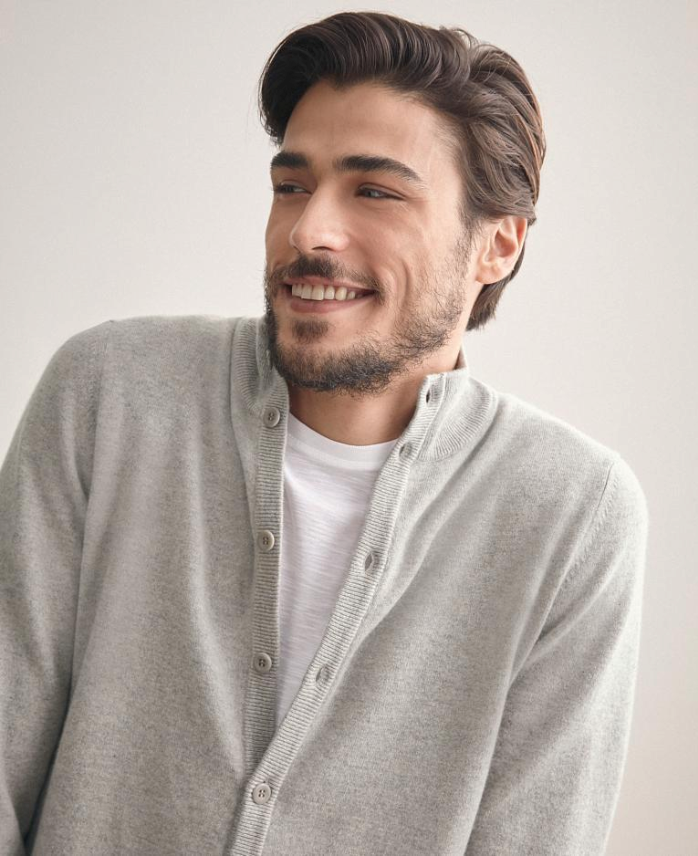
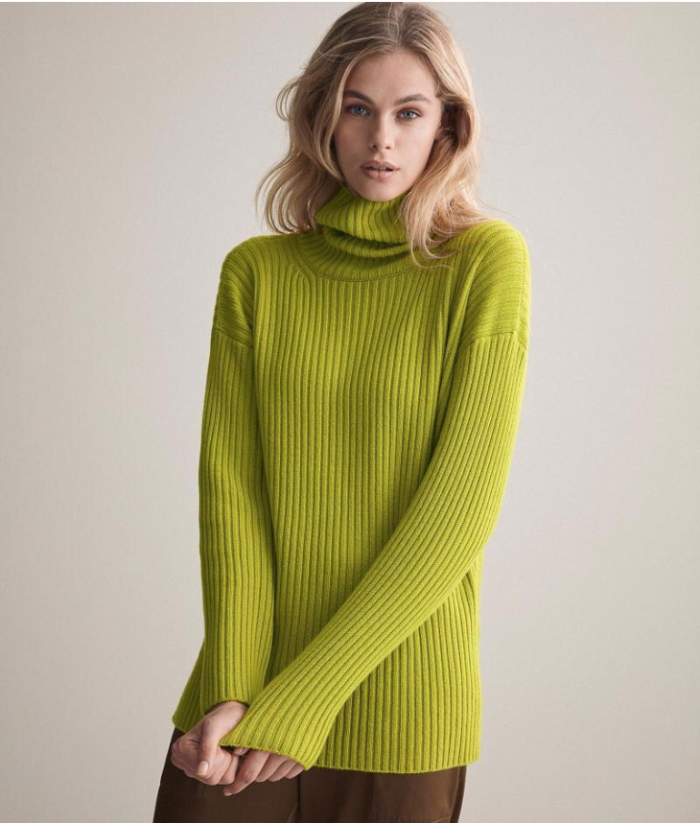
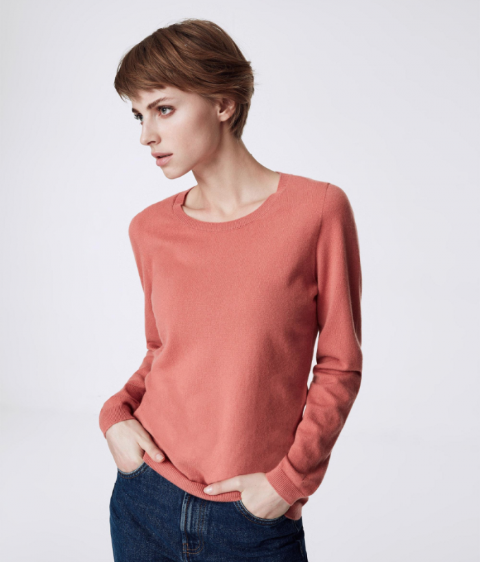
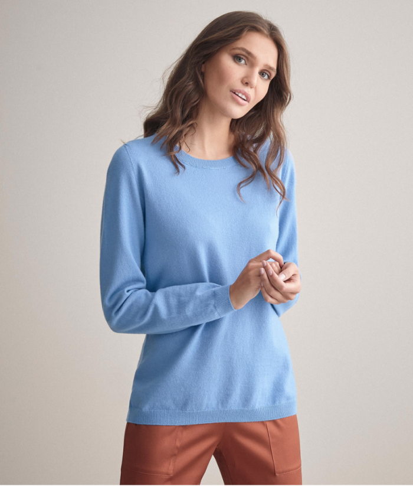

Good morning Zagulini we are getting closer and closer to Christmas and in this period I am thinking of the snow, walking in the mountains and the warmth of a cozy chalet! By now you know me well I'm already thinking about the best solutions for mountain clothing. I like to dress comfortably, warm and versatile at the same time. This is why I always choose the best and above all I pay attention to aesthetics and quality and for some years my choices have always been oriented towards Falconeri, a brand specialized in the processing of cashmere. I find that their garments are inimitable and a plus point is certainly given by the attention they pay to environmental sustainability is the Russian top model Irina Shayk and Falconeri launches a strong message that connects man to the nature that surrounds him. I truly loved this campaign and embraced its message. Furthermore, let's not forget that thanks to its cashmere, Falconeri carries around the world the streak of Italian manufacturing that everyone envies us, as well as our unmistakable style.
Just think that I gave my Charlie a men's cardigan , he never takes it off for its softness, casual style and high quality: I was very happy that he appreciated this gift !!!For my mountain outfits I thought of Falconeri Super Cashmere, a precious, modern and easy-chic yarn, below I show you my choices.On the other hand, my friends, mountain clothes must be as warm and comfortable as Falconeri garments are. How can you go on the snow without having an iconic garment like a nice cashmere sweater ?!
Then this year, I don't know why, I'm obsessed with light colors. I really like white sweaters with high necks and braids, on the Falconeri website I found a crazy one! Already I see myself dressed all in white, with a beige coat and boots: super cool mountain clothing, what do you think? I really like the color trends for this autumn / winter because beyond the classic colors, black, gray and brown, we find mustard yellow, beige, white, light blue and antique pink. They are all super combinable and very casual / chic at the same time. So we have a wide choice and we can also have fun creating new combinations by creating unique but highly sought-after looks. Now zagulini tell me if my choices to go to the mountains with these iconic, beautiful and comfortable Falconeri garments are not the right idea to face the cold !!!
      